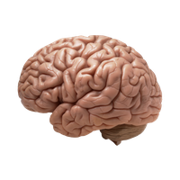
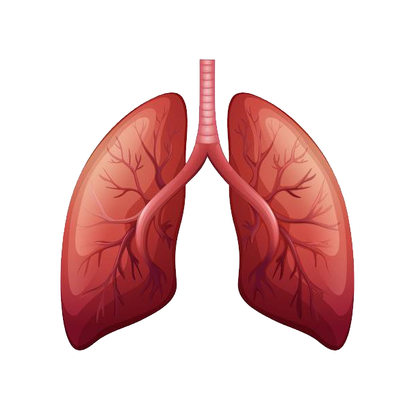
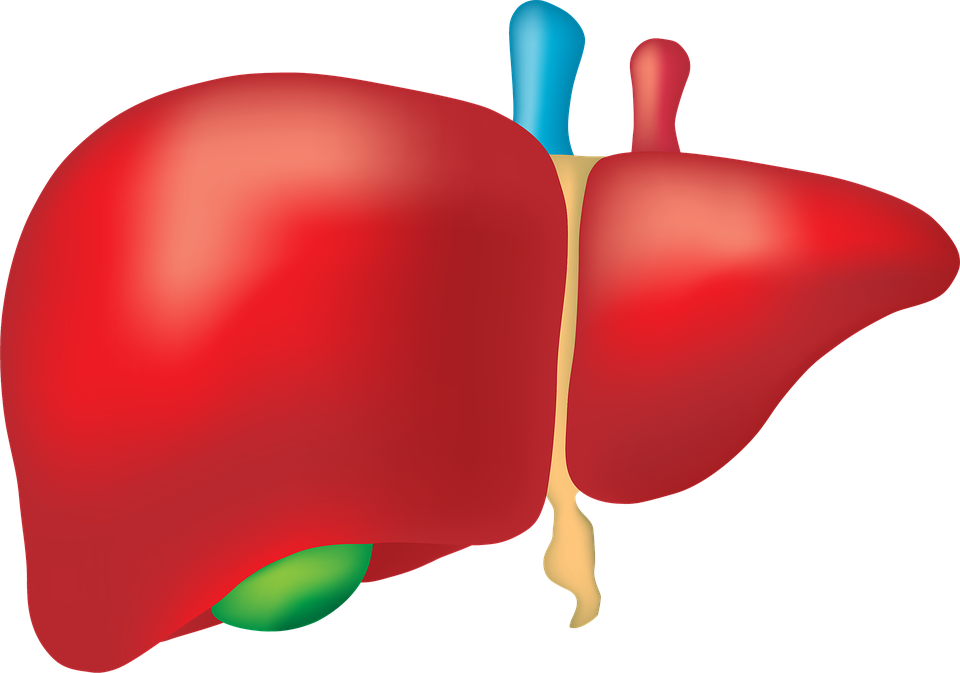
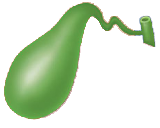
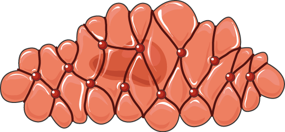
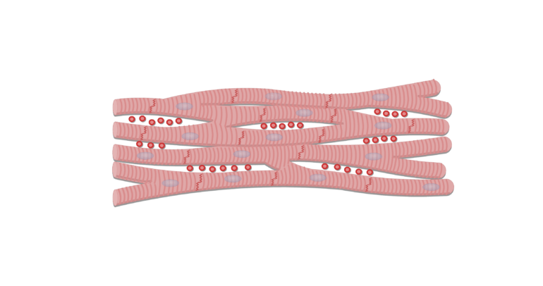
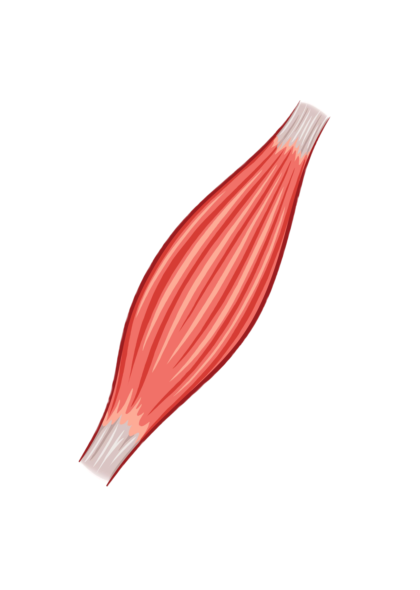
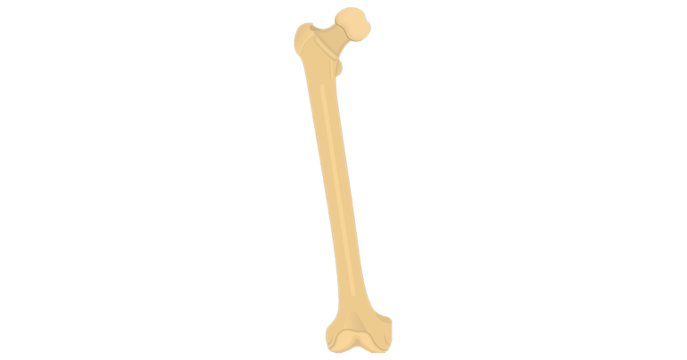
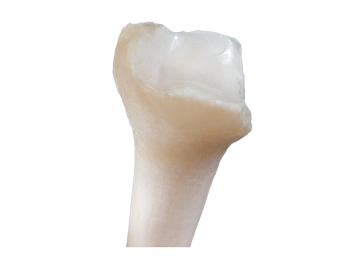
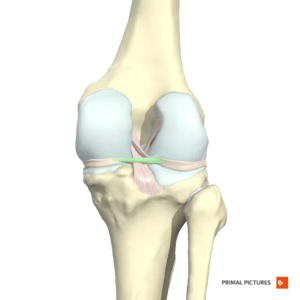

AMAZING HUMAN BODY
Greetings To One And All Present Today With Us, This Is A Website Designed By The Aesthetical Thinkers Team (Credits At The Bottom Of The Webpage). This Is A Website Made About The Human Body. In This Website You Will Learn About The Different Organs, Muscles and Bones Of Our Body.
Organs:-
BRAIN

The brain is a complex organ that controls thought, memory, emotion, touch, motor skills, vision, breathing, temperature, hunger and every process that regulates our body. Together, the brain and spinal cord that extends from it make up the central nervous system, or CNS
LUNGS

The lungs are a pair of spongy, air-filled organs located on either side of the chest (thorax). The trachea (windpipe) conducts inhaled air into the lungs through its tubular branches, called bronchi. The bronchi then divide into smaller and smaller branches (bronchioles), finally becoming microscopic.
HEART

The heart is a fist-sized organ that pumps blood throughout your body. It's the primary organ of your circulatory system. Your heart contains four main sections (chambers) made of muscle and powered by electrical impulses. Your brain and nervous system direct your heart's function.
LIVER

The liver is located in the upper right-hand portion of the abdominal cavity, beneath the diaphragm, and on top of the stomach, right kidney, and intestines. Shaped like a cone, the liver is a dark reddish-brown organ that weighs about 3 pounds.
GALL BLADDER

Your gallbladder is a small, pear-shaped organ on the right side of your abdomen, just beneath your liver. The gallbladder holds a digestive fluid called bile that's released into your small intestine.
For More Organs Click Here!
Muscles:-
There Are Three Types Of Muscles, Which Are Smooth, Cardiac And Skeletal Muscles:-
SMOOTH MUSCLES

Smooth muscle is found throughout the body where it serves a variety of functions. It is in the stomach and intestines where it helps with digestion and nutrient collection. It is found throughout the urinary system where it functions to help rid the body of toxins and works in electrolyte balance.
CARDIAC MUSCLES

Cardiac muscle (or myocardium) makes up the thick middle layer of the heart. It is one of three types of muscle in the body, along with skeletal and smooth muscle. The myocardium is surrounded by a thin outer layer called the epicardium (AKA visceral pericardium) and an inner endocardium.
SKELETAL MUSCLE

Skeletal muscles comprise 30 to 40% of your total body mass. They're the muscles that connect to your bones and allow you to perform a wide range of movements and functions. Skeletal muscles are voluntary, meaning you control how and when they work.
For Understanding These Muscles, Click Here!
Skeletal System:-
There Are Three Main Kinds Of Bones In The Skeletal System Of Our Body, Which Are Bones Itself, Cartilages And Ligaments:-
BONES

Bones are made up of calcium, phosphorus, sodium, and other minerals, as well as the protein collagen. Bones function as the skeleton of the human body, allow body parts to move and protect organs from impact damage. They also produce red and white blood cells
CARTILAGES

Cartilage is the main type of connective tissue seen throughout the body. It serves a variety of structural and functional purposes and exists in different types throughout our joints, bones, spine, lungs, ears and nose.
LIGAMENTS

Ligaments are bands of tissue that help hold bones, joints and organs in place. You can take several steps to protect your ligaments. However, ligament sprains are very common, especially in the ankle, knee, wrist, back and neck.
For Understanding These Types Of Bones, Click Here!
Credits
CODER :- SHOURYA KAUNDAL
DESIGNER :- SANCHAY SEMTA
VIDEOS FOUND BY :- SHREYAS VARDAN NEGI, YATHARTH PUNJ AND DIVYANSH SHARMA
PICTURES FOUND BY :- ABHIGYA CHAUHAN
NAME OF THE WEBSITE PROVIDED BY :- AKSHANSH THAKUR
HELPERS WHO SHOWED GREAT SUPPORT :- DHAIRYA SHARMA, SHASHWAT P CHANDER, BHAVIC RANGOTE, YAKSHRAJ THAKUR, ARNAV RAJ CHANDEL AND BHAVESH SHARMA
THIS WAS A PROJECT MADE BY THE AESTHETICAL THINKERS TEAM